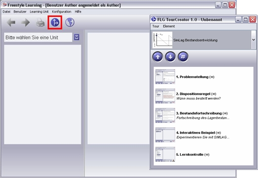
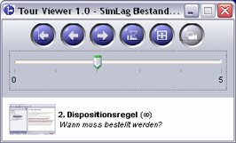

Guided Tours
Eine Guided Tour ist eine Abfolge von Elementen, die den Lernenden hinsichtlich bestimmter Fragestellungen durch eine Learning Unit führen. Sie hilft, einen Ansatz zu finden oder weist einen Weg zur Lösung. Der Tour Creator lässt sich über den Menüeintrag "Learning Unit / Tour Creator" anzeigen. Es erscheint ein zusätzliches Programmfenster, in dem Guided Tours ausgewählt und gestartet werden können.

Bevor Sie eine Tour starten, wählen Sie einen Eintrag aus dem Auswahlfeld im Fenster des Tour Creators. Daraufhin erscheinen im unteren Bereich die Elemente, die zu der ausgewählten Tour gehören.
Zum Starten der Tour klicken Sie auf das blaue Abspielsymbol in der Toolbar. Das Fenster des Tour Creators wechselt darauf in den Präsentationsmodus. Im Präsentationsmodus ist das Fenster kleiner und stört so nicht beim Betrachten der Elemente einer Tour, welche im Programmfenster von Freestyle Learning angezeigt werden.

Mit dem Schieberegler können Sie im Präsentationsmodus eine Schnellauswahl von Elementen der Tour vornehmen. Im unteren Fensterbereich sehen Sie eine Vorschau des Elements sowie die zugehörigen Beschreibungsdaten. Lassen Sie den Schieberegler los, wird das ausgewählte Element in Freestyle Learning angezeigt. Noch Platz sparender ist es, wenn auch das Vorschaufenster ausgeblendet wird. Drücken Sie dazu auf die entsprechende Schaltfläche in der Toolbar.
Der Ablauf einer Tour kann zeitgesteuert oder manuell erfolgen. Eine zeitgesteuerte Präsentation starten Sie durch Klick auf die Abspielschaltfläche. Jedes Element wird so lange angezeigt, wie es in den Elementeigenschaften vorgegeben ist. Sie können die Präsentation jederzeit durch erneutes Drücken der Abspieltaste anhalten und wieder fortsetzen. Bei manuellem Ablauf wird das nächste Tourelement durch Drücken der Pfeiltaste angezeigt. Die Auswahl über die Pfeiltasten funktioniert auch bei zeitgesteuertem Ablauf.
Schaltflächen im Präsentationsmodus
|
Zum Anfang der Tour |
Stoppt die Präsentation einer Tour und setzt den Schieberegler an den Anfang zurück |
|
Voriges / nächstes Element |
Zeigt das vorhergehende bzw. nachfolgende Element der Tour an |
|
Tour starten |
Startet die Präsentation einer zeitgesteuerten Tour |
|
Tour fortsetzen |
Wird bei angehaltener Tour angezeigt. Setzt die Präsentation einer zeitgesteuerten Tour fort. |

|
Elementvorschau |
Blendet im Präsentationsmodus die Elementvorschau ein bzw. aus |
Hinweis: Jederzeit besteht die Möglichkeit die Guided Tours zu erweitern oder eigene Guided Tours zu erstellen.
Zurück zur Hauptseite